Missing ID · bob
The held line · Day 2 at Security
E1 · Approved illustration

The owner approved E1 for the dedicated Security event screen. UI DESIGNER handoff · Approved asset manifest
E1 · Placement and device proofs
Cyan circles connect bob’s and LIMEN’s eyes. Amber follows the counter edge. Green encloses the text-safe area. The dashed white boundary marks the maximum trim.

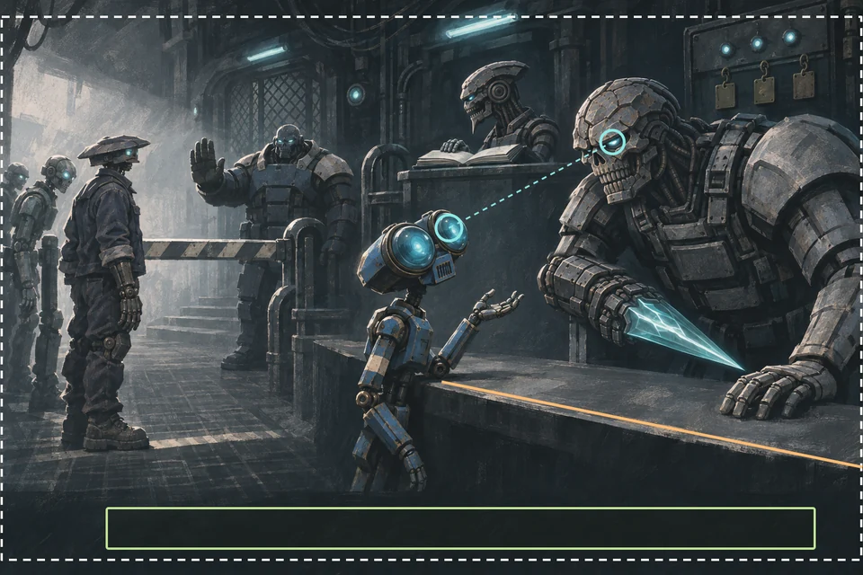

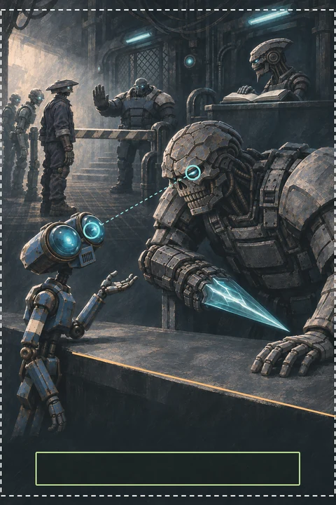

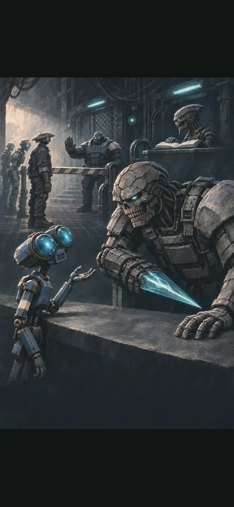

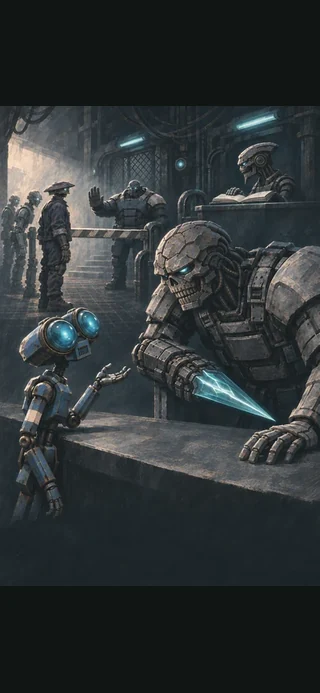

Earlier layout and treatment studies
The original layout study and its device checks follow. See the five landscape candidates.
Five landscape treatments
The owner selected E, The held line. The full set preserves the earlier review.

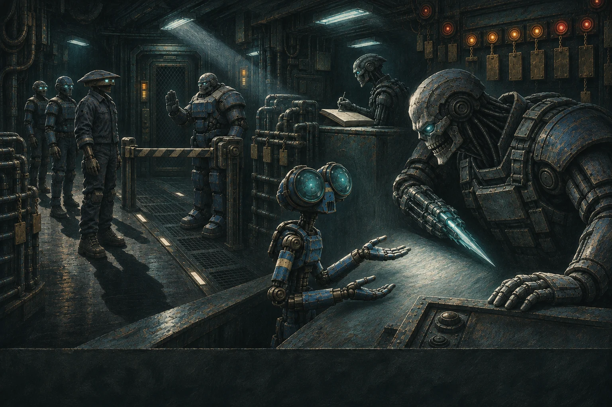
A cold shaft falls across both of bob’s open palms and the bare counter.

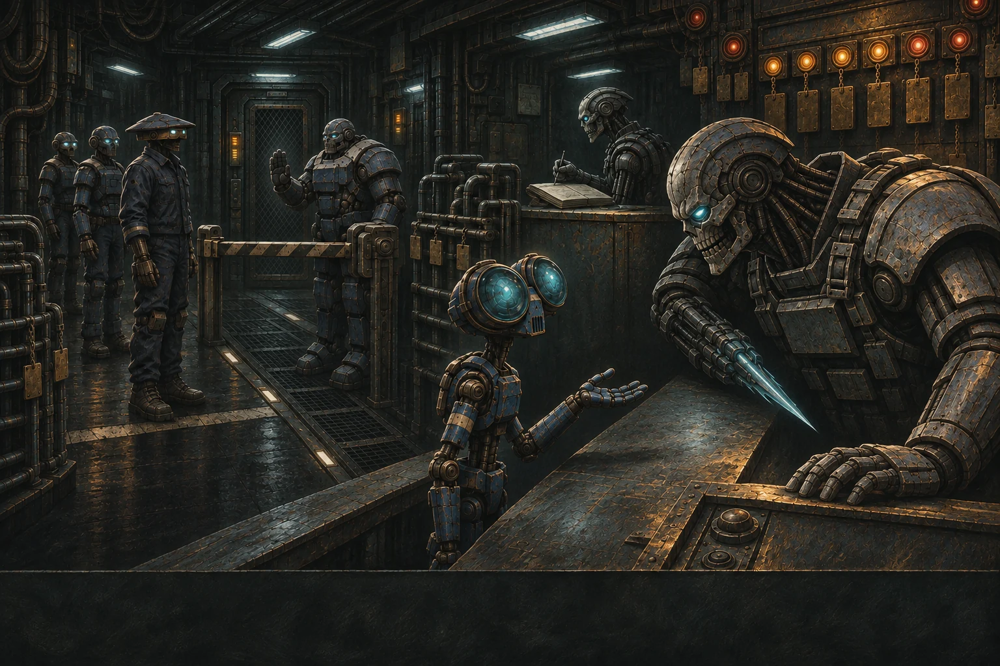
Warm edge light picks out the desk lip. bob raises one hand and waits for LIMEN’s answer.

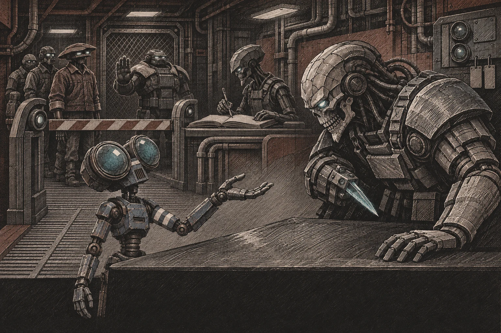
Dense engraved lines and sparse cyan separate the cast. bob’s raised palm breaks the open space above the desk.

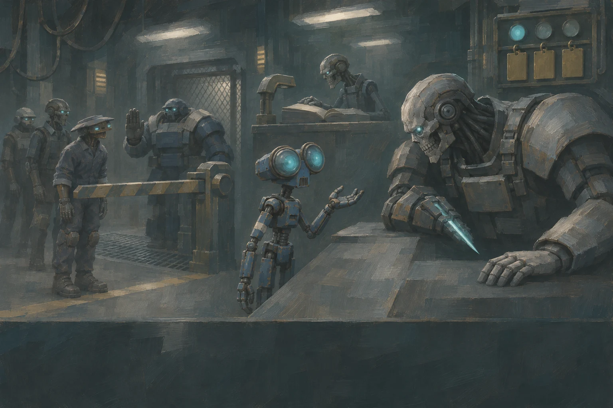
Soft grey-green overhead light and broad matte brushwork give LIMEN’s listening pause more weight.

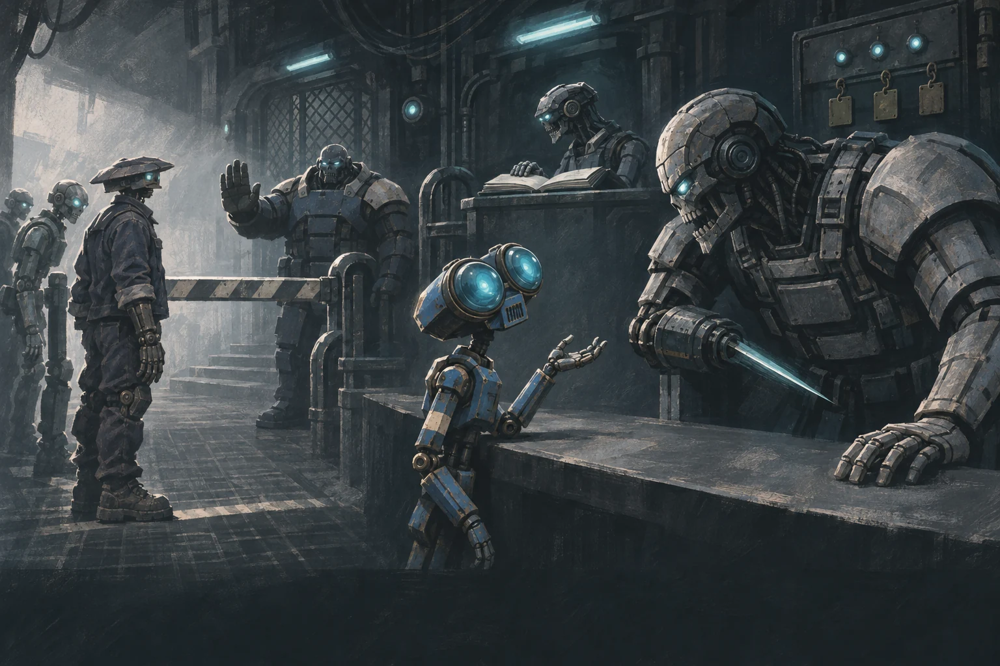
Doorway backlight separates jo and the waiting workers. gus’s raised palm explains the stopped entrance at a glance.
Placement guides
Keep the faces, bob’s open palm, the bare enamel between the hands, and the queue inside the frame. The dark counter front can carry a short line of type. Longer case text can continue below the painting.
- Cyan circles · eye line
- Amber line · counter edge
- Green box · text-safe area
- Dashed outline · maximum trim

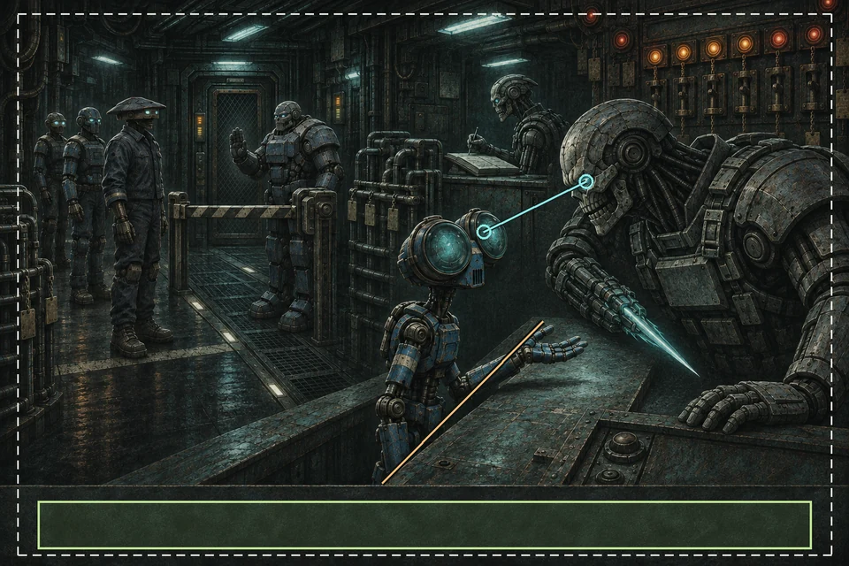

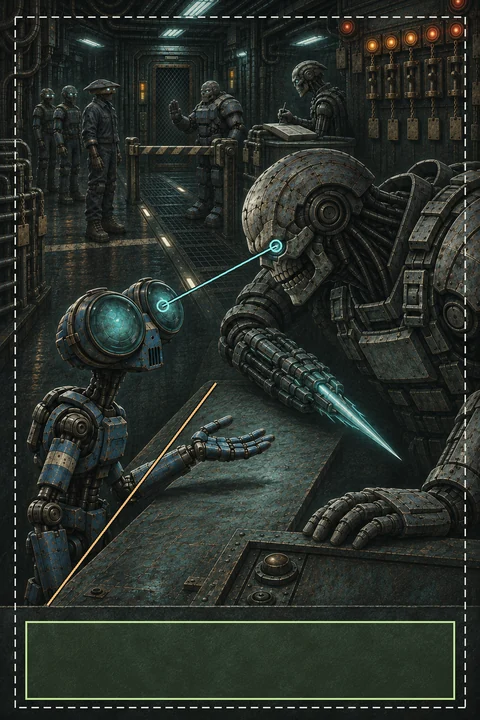
Device proofs
These stills open at their recorded size. The charcoal surround shows the space available around the complete plate. UI DESIGNER will set the case text, intervention controls and return navigation after art approval.

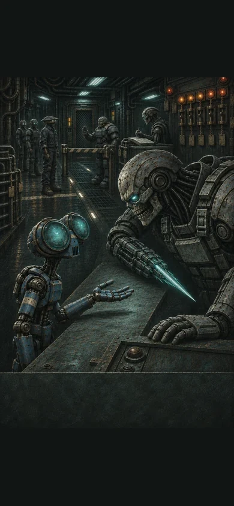

Open the 1440 × 960 desktop proof
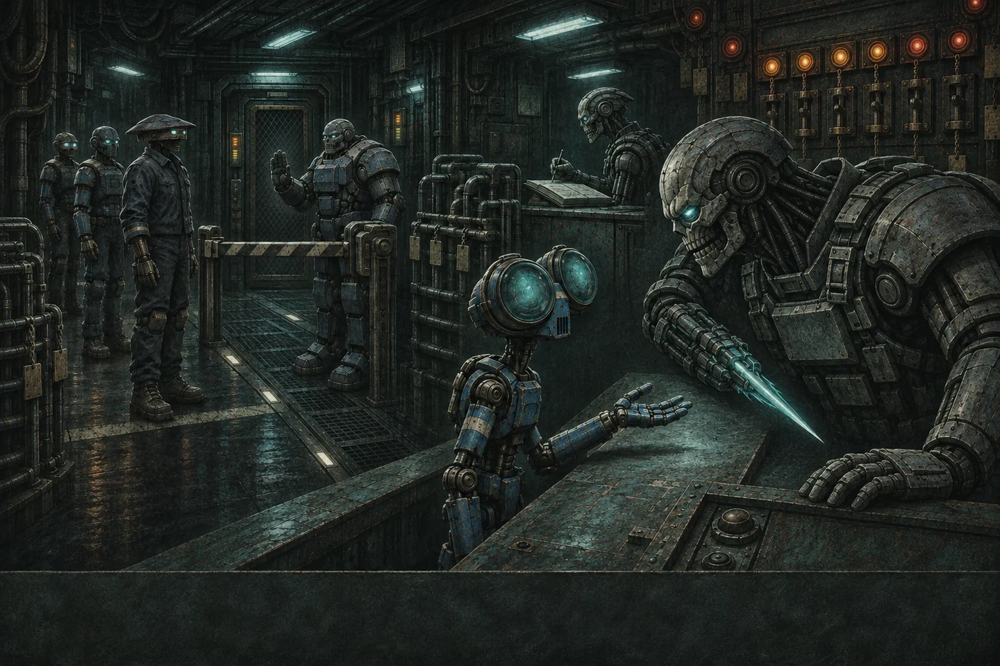
Art handoff
Can you recognize bob and LIMEN at a glance? Does the empty hand read as an interruption? Can you see who stopped the entrance, and where the waiting workers would go? Compare the same moment at desktop and phone size.
- Asset manifest and crop coordinates
- Source record, prompts and revision history
- Landscape master PNG · Portrait master PNG
- Open the clean responsive framing proof